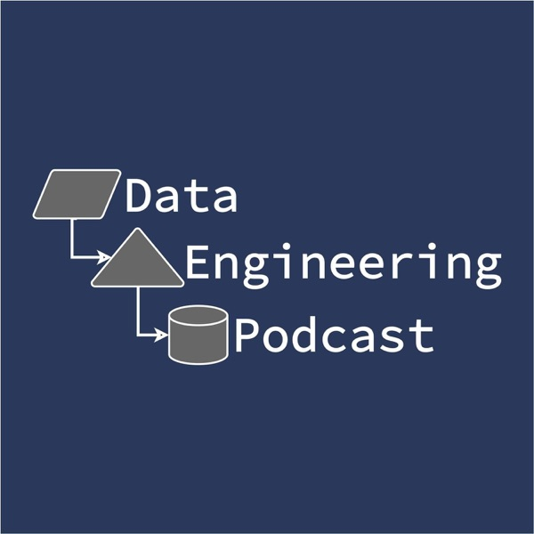
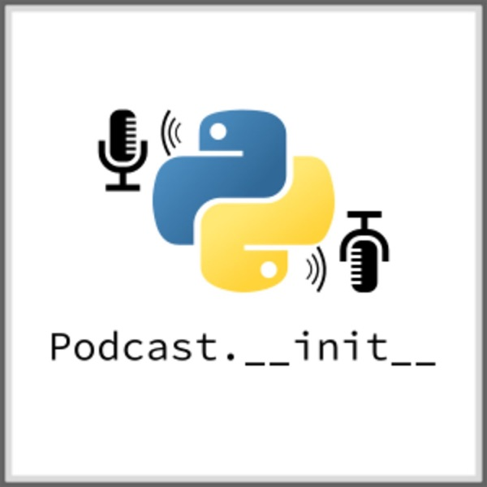
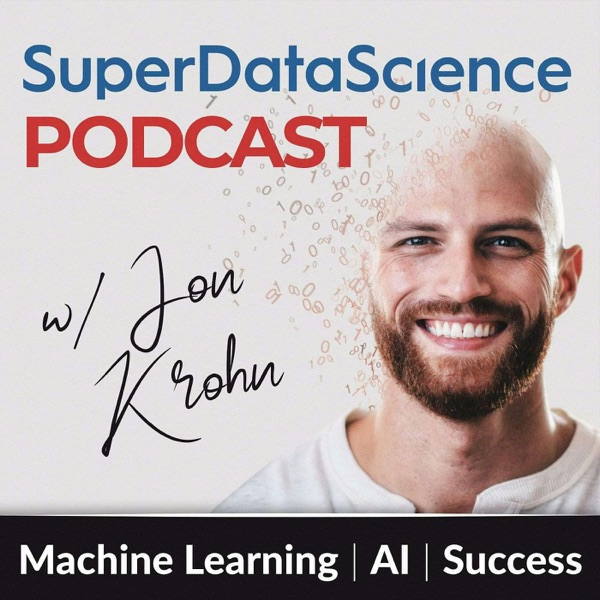

Deep dives into modern data infrastructure — pipelines, warehouses, dbt, orchestration. Closest match to where I want to grow long-term.
Análisis a fondo de la infraestructura de datos moderna — pipelines, data warehouses, dbt, orquestación. Lo más cercano a hacia dónde quiero crecer a largo plazo.

Same host, Python-community focused — libraries, tooling, and the people building them.
Mismo presentador, enfocado en la comunidad de Python — librerías, herramientas y las personas que las construyen.

Broad, practitioner-driven data science and ML career content — just hit its 1,000th episode.
Contenido amplio sobre carrera en ciencia de datos y ML, hecho por profesionales del área — acaba de alcanzar su episodio 1,000.